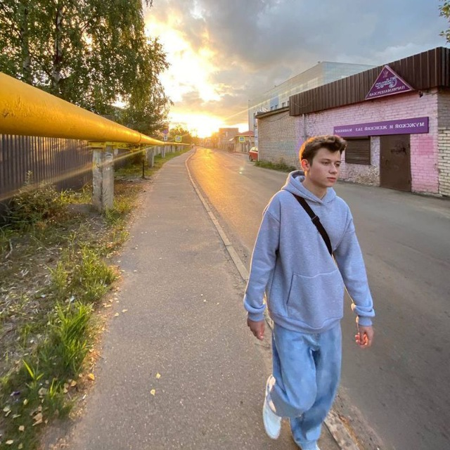
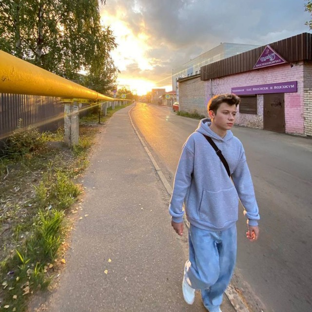

Информация об авторе
Привет! Меня зовут Безруков Владимир. Я учусь в Политехническом колледже НовГУ. Я создал этот сайт, чтобы делиться интересными новостями и информацией с вами.
Привет! Меня зовут Безруков Владимир. Я учусь в Политехническом колледже НовГУ. Я создал этот сайт, чтобы делиться интересными новостями и информацией с вами.
